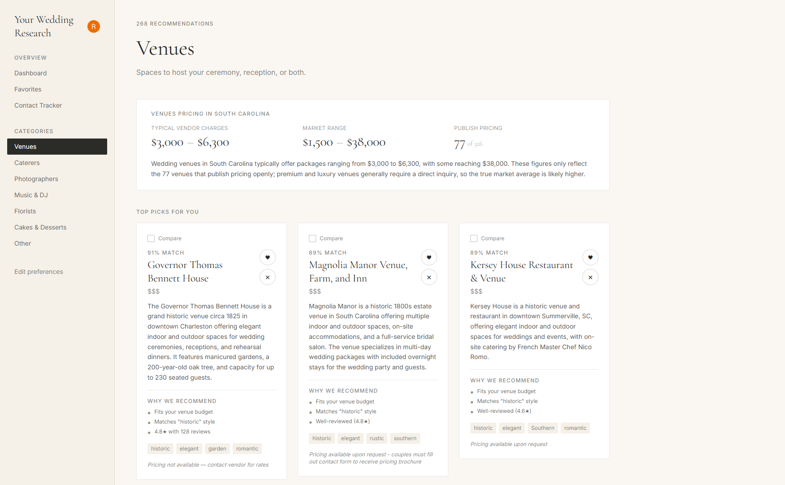

Wedding AI Helper
AI-assisted wedding research product that turns a couple's preferences into a curated, scored shortlist of local venues and vendors. A discovery and enrichment pipeline pulls from Google/Yelp Places and vendor websites, then Claude generates summaries and match explanations that power a personalized dashboard with favorites and contact tracking.